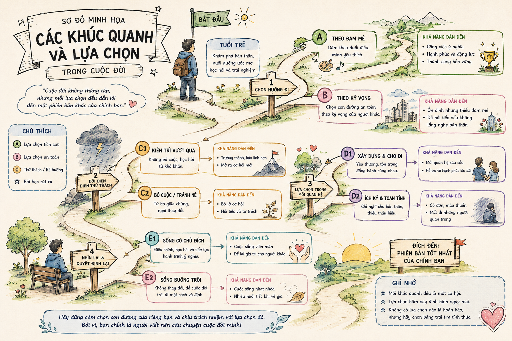

Mỗi lựa chọn của chúng ta ngày hôm nay có ảnh hưởng như thế nào tới cuộc sống của chúng ta trong tương lai? Làm thế nào để đưa ra những lựa chọn đúng trong cuộc đời?
Năm sinh: 1946 tại tỉnh Hải Dương.
Sự nghiệp: Ông từng là lãnh đạo cao cấp của nhiều tập đoàn hàng đầu thế giới, cố vấn thương trực của Chính phủ Pháp về thương mại quốc tế. Hai lần được Tổng thống Pháp phong tước Hiệp sĩ. Năm 2009, ông được Chủ tịch nước Việt Nam trao tặng Kỷ niệm chương Vì sự nghiệp giáo dục.
Tác phẩm tiêu biểu: Một đời thương thuyết (2014), Một đời quản trị (2017), Một đời như kẻ tìm đường (2019).
Xuất xứ: Trích từ cuốn sách cùng tên của tác giả Phan Văn Trường (NXB Trẻ, TP. Hồ Chí Minh, 2020).
Nội dung tổng quát: Cuốn sách là sự đúc kết những trải nghiệm phong phú của một người đã đi khắp thế giới, kinh qua nhiều vị trí nghề nghiệp, am hiểu văn hóa Phương Đông và Phương Tây, gửi gắm thông điệp tha thiết đến thế hệ trẻ Việt Nam.
Năm 14 tuổi, tác giả đối mặt với lựa chọn chương trình học cổ điển (tiếng La-tinh, Hy Lạp) hay hiện đại. Dưới sự tư vấn của cha mẹ và bạn bè, tác giả đã chọn chương trình ngôn ngữ hiện đại.

Hình 1: Sơ đồ minh họa các khúc quanh và lựa chọn trong cuộc đời (h1.png)Dù tốt nghiệp kỹ sư nhưng tác giả chưa bao giờ mơ làm kỹ sư hay có quyền lực. Số phận đã đưa tác giả trải qua hàng loạt vị trí khác nhau:
\( \text{Thành công} \xrightleftharpoons \text{Hạnh phúc} \) không phụ thuộc vào con đường chúng ta đi, mà nằm ở tâm trạng tự tại, ở những giá trị tích cực mà chúng ta gieo trao cho xã hội ngay trên từng nẻo đường đã qua.
✓ Hạnh phúc nhỏ: Nằm trên từng bước đi, sự trải nghiệm, tự chấp nhận và tinh thần tích cực.
✓ Hạnh phúc bền vững: Là hạnh phúc lấy gốc từ sự cống hiến, vị tha và tạo ra giá trị cho cộng đồng.
Quan điểm chính: Cuộc đời là một hành trình dài tìm đường; thành công và hạnh phúc không nằm ở vị trí hay con đường ta chọn mà ở tâm trạng tự tại và những giá trị ta cống hiến cho xã hội.
Hệ thống lý lẽ & bằng chứng:
Yếu tố tự sự: Tác giả kể lại những cột mốc cá nhân (năm 14 tuổi, sang Pháp, quá trình chuyển đổi các công việc...). Tác dụng: Tạo sự chân thực, sinh động, làm nền tảng vững chắc cho các nhận định nghị luận.
Yếu tố biểu cảm: Sự băn khoăn, cảm xúc hoài niệm, thái độ chân thành, nhiệt huyết khi nhắn nhủ. Tác dụng: Tăng sức lay động lòng người, giúp bài viết không bị khô khô khan mà giàu chất trữ tình triết lý.
"Theo bạn, thành công và hạnh phúc phụ thuộc vào lựa chọn của chúng ta hay vào những may rủi ngẫu nhiên trong cuộc đời? Viết đoạn văn (khoảng 150 chữ) thể hiện quan điểm của bạn về vấn đề này."
Thành công và hạnh phúc trong cuộc sống là kết quả của sự tương tác giữa lựa chọn chủ quan và yếu tố may rủi khách quan, nhưng lựa chọn của bản thân luôn đóng vai trò quyết định. Những yếu tố ngẫu nhiên hay may rủi chỉ là những biến số bất ngờ trên hành trình. Chính thái độ đón nhận, năng lực thích ứng và những quyết định kiên trì mới định hình nên giá trị thực sự của mỗi người. Giống như chia sẻ của Phan Văn Trường trong Một đời như kẻ tìm đường, dù hoàn cảnh đẩy ta vào những khúc quanh không dự tính, tâm trạng tự tại và tinh thần cống hiến hết mình sẽ biến mọi con đường thành con đường dẫn tới hạnh phúc. May mắn chỉ mỉm cười với những ai không ngừng cố gắng và làm chủ các lựa chọn của chính mình.
Tác giả Phan Văn Trường là một trong số rất ít người Việt Nam được Tổng thống Pháp trao tặng Huân chương Bắc đẩu bội tinh (Légion d'honneur) - huân chương cao quý nhất của Nhà nước Pháp.
Tự lập cho mình một "Bản đồ lựa chọn cá nhân" khi đứng trước các quyết định quan trọng: Phân tích ưu/nhược điểm, xác định tâm thế sẵn sàng thích ứng trước mọi khúc quanh không dự báo.
Khi đọc văn bản nghị luận mang tính hồi ký - tự truyện, cần chú ý mối liên hệ giữa các bằng chứng thực tế từ cuộc đời tác giả với lý lẽ triết lý mà tác giả muốn gửi gắm.
Trả lời đúng 10 câu hỏi để chinh phục đỉnh cao tri thức văn học!
Câu 1: Tác giả của văn bản "Một đời như kẻ tìm đường" là ai?
Câu 2: Năm 14 tuổi, tác giả phải lựa chọn giữa hai chương trình học nào?
Câu 3: Cha mẹ tác giả mong muốn hướng ông theo lộ trình nghề nghiệp nào?
Câu 4: Ngôn ngữ cổ điển nào được coi là trung tâm trong chương trình cổ điển thời bấy giờ?
Câu 5: Tác giả ví cuộc đời mỗi người giống như hình ảnh nào?
Câu 6: Theo tác giả, hạnh phúc bền vững gốc rễ bắt nguồn từ đâu?
Câu 7: Cuốn sách "Một đời như kẻ tìm đường" xuất bản năm nào?
Câu 8: Phương thức biểu đạt chính của văn bản là gì?
Câu 9: Tác giả được Tổng thống Pháp trao tặng danh hiệu cao quý nào?
Câu 10: Điểm đặc biệt trong phong cách văn nghị luận của Phan Văn Trường ở bài viết này là gì?
Lời giải chi tiết:
Thay \( k = 1 \) vào công thức: \( P(T) = 0.4 + 0.5 \times (1) = 0.9 \) (tương đương 90%).
Nhận xét: Dù xuất phát điểm hay cơ hội ban đầu chỉ là 40% (\( k = 0 \)), sự nỗ lực kiên trì của bản thân có thể nâng khả năng thành công lên tới 90%. Điều này hoàn toàn trùng khớp với khẳng định của Phan Văn Trường: Con đường không quyết định tất cả, chính sự cố gắng tận tụy trên con đường đó mới làm nên thành công.
| Tiêu chí | Hạnh phúc nhỏ | Hạnh phúc bền vững |
|---|---|---|
| Nguồn gốc | Trải nghiệm cá nhân trên từng bước đi. | Sự vị tha, cống hiến giá trị cho cộng đồng. |
| Biểu hiện | Sự chấp nhận hoàn cảnh, giữ tâm thái tích cực. | Tạo ra thành quả tốt đẹp cho mọi người xung quanh. |
Lời giải chi tiết:
Cho đi ở đây bao gồm tri thức, công sức, sự sẻ chia và tâm huyết nghề nghiệp. Khi con người thoát khỏi sự vị kỷ cá nhân, cống hiến hết mình cho xã hội, tâm trí sẽ giải phóng khỏi những nỗi lo sợ được - mất. Đó chính là trạng thái "thư thái" - bình yên nội tâm vững chắc nhất mà mỗi người tìm kiếm trong suốt cuộc đời.